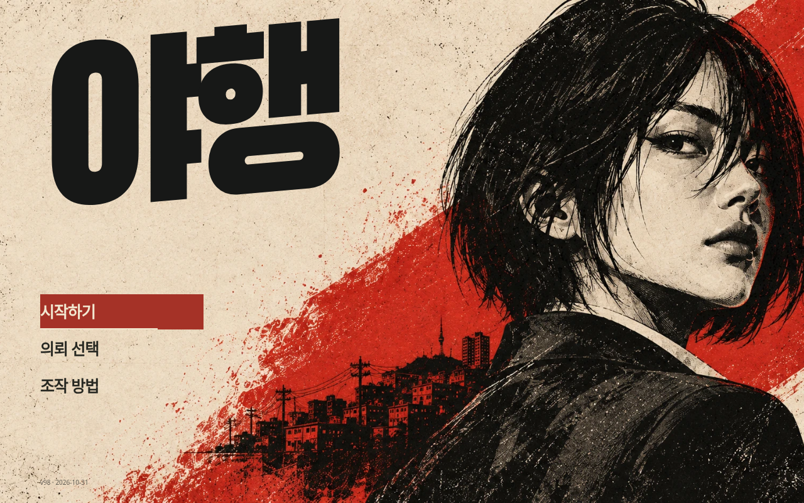

야행 · 잉크 누아르 시안
메인 포스터의 종이·먹·주홍을 의뢰와 대화, VIP 클럽까지 연결했습니다.
기존 v97 잉크 누아르 시안 v100
잉크 누아르 시안 v100
기준이 된 메인화면

범위와 확인 내용
VIP 클럽과 공통 UI를 먼저 맞춘 작동 시안입니다. v98에서 살피기를 빼고 메뉴를 상단으로 옮겼습니다. 대화 초상은 이전 인게임 모델로 되돌렸습니다. 결과 화면은 화면 구성용 상태입니다.
PC·터치에서 여섯 의뢰의 맵·조명 판정·목표 데이터와 두 모드의 주요 조작 버튼 영역이 같은지 확인했습니다. 실제 휴대전화의 성능 검사는 아닙니다.
상세 범위·자산·검증 내역
같은 인물·카메라 배치의 브라우저 화면입니다. 각 이미지를 누르면 원본 크기로 볼 수 있습니다.